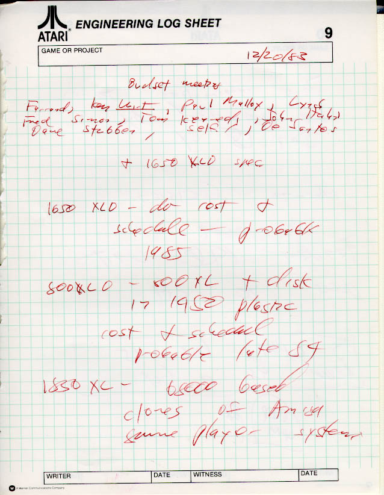

In Late 1983, Atari's Home
Computer Division management team put onto the schedule among other projects a
new computer system called the 800XLD and according to notes, this would be an
800XL in a 1450XLD case. The built in modem and voice
synthesizer would be removed. The design would have a built in disk
drive controller, just like the 1450XLD but the design would incorporate a new
combination chip called "KERI" which would combine the ANTIC, GTIA and POKEY
chips into one. To further cost reduce the design the FREDDIE and
the MMU chip would also be combined into a new chip called "MUFFY".

Bill Drake would be tasked with
this in June in 1984. He would be retained by the Tramiels and
assigned into what was called the "Legacy Group" under Tom Brightmann.
His design would be continued and would be used for the new line of XL
computers: the 800XL, the 800XLF, the 900XLF and the 900XLK.
The disk drive controller would be dropped from the product line in early
September 1984 and then the 800XL would also be dropped, the 900XLF would become
the 65XE... work on the
900XLK would continue up through October 1984 and would be dropped, the KERI
chip work would stop due to financial constraints.
September 9, 1984 XL Products Memo
The schematics for the design
are presented here:
XL Computer (with MUFFY & KERI)


{kind=link}